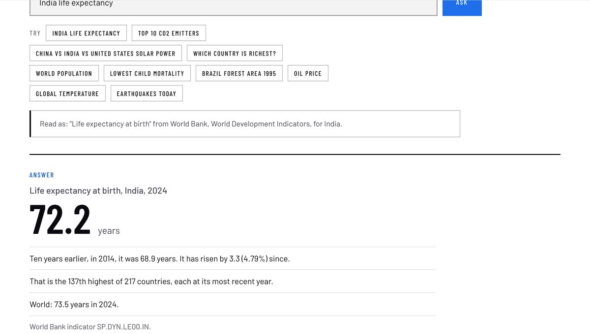
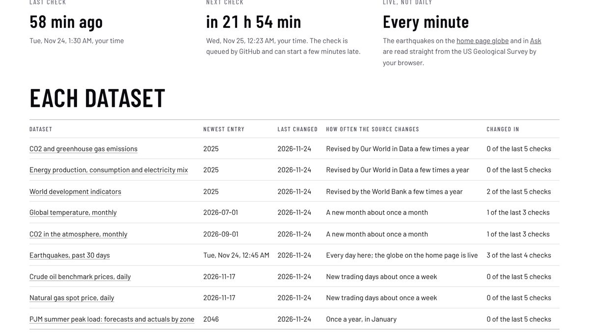

How to use it
Five things you can do here, each in a few steps. Everything is free, nothing needs an account, and every number tells you where it came from.
Ask for a number
- Type a measure and a place in the box on the home page or on Ask: Kenya internet users, top 5 wind power, oil price.
- Read the answer. You get the value, its year, how it ranks, how it has moved in ten years and the full history as a chart.
- Check the "Read as" line under the box. It says which variable and place your words were matched to, and offers others if it guessed wrong.
- Take it with you: copy the answer with its source, download the numbers, or open the same slice in the explorer.
Answers are looked up, never written by a model. If the data does not hold it, the page says so.

Take a dataset
- Pick a dataset from the full list. One click on Download CSV takes the whole file.
- Or customize it first. In the explorer, choose the variables, the countries and the years. Each choice is a chip you can remove.
- Check before you take it: the Table tab shows the exact rows, Chart draws them, Summary gives the key figures.
- Choose a format in the bar at the bottom (CSV, Excel, JSON or TSV) and download. Copy link gives a link that reopens the same view.
Under "Conditions and merging" you can keep only rows that meet a rule, or join a second dataset that shares the same countries and years.

Test an idea
- State a hypothesis in Researcher mode, such as richer countries live longer, or pick an example.
- Check how it was read: a relationship, a trend or a difference between groups, and which variables. Change anything that is off.
- Read the recommendation. The page looks at the shape of the data and proposes a method, with its reasons. Other suitable methods are one click away.
- Run it. You get the result in plain words, the numbers, charts, checks on the method, and a list of what the result does not show.
The statistics are checked against scipy and statsmodels on every change, and agree to better than one part in a billion.

Analyse your own file
- Drop a file on the Your data page: CSV or other text tables, Excel, OpenDocument, Numbers, JSON, Parquet, SPSS or Stata. It is read by your browser and never uploaded.
- Look at the picture: rows, columns, empty cells, and one line per column with its type, its spread and anything worth checking.
- Pick a first look the page suggests, or choose one of nine tools: summaries, group comparisons, relationships, correlations, trends, count tables and more.
- Keep going. Results stay on the page so you can compare them. Copy any result, download its table, or save the whole file in another format.
No file to hand? The page has two samples to try.

Check how fresh it is
- Every source is checked once a day. The Updates page shows when the last check ran and counts down to the next.
- See what changed. For each check: rows added, rows dropped, values revised, with examples of old and new values.
- Follow one dataset by clicking its name; the log then shows only its changes.
Earthquakes are the exception: the globe on the home page reads the US Geological Survey feed every minute.

Use it from code or with an AI system
Every file has a fixed address that keeps working after each refresh, and the site allows other pages and programs to read it.
# Python: one dataset straight into a table
import pandas as pd
df = pd.read_csv("https://sahiljangra12.github.io/open-data-company/data/sets/world-bank-development.csv")
india = df[df["code"] == "IND"][["year", "life_expectancy", "gdp_per_capita"]]
# R
df <- read.csv("https://sahiljangra12.github.io/open-data-company/data/sets/energy.csv")The manifest
data/datasets.json lists every dataset and variable with its unit, description, source and licence.
Latest values
data/latest/<dataset>.json holds the newest value of every variable for every country, in one small file.
For AI systems
llms.txt describes all of it in plain text. Give that address to a chatbot and ask it to answer from the files, citing them.
Change log
data/changelog.json records what each daily check changed, so a program can tell whether to fetch again.
Questions
Is it free? Do I need an account?
It is free and there is no account. Each dataset carries the licence of its source, shown beside it; most are Creative Commons Attribution or public domain, which allow reuse with credit.
Where do the numbers come from?
From the publishers named on each dataset: Our World in Data, the World Bank, NASA, NOAA, the US Geological Survey, the US Energy Information Administration and PJM. The site reshapes their files into tidy tables. It does not estimate, fill gaps or adjust values.
How is this different from searching the web or asking a chatbot?
A search gives you links to read and reconcile. A chatbot gives you a figure you cannot easily check, and it can be out of date or simply wrong. Here an answer is a lookup in a named dataset: you see the value, its year, its source and licence, and one click shows the rows behind it. The trade-off is scope: it only knows what is in the datasets listed on the site.
How do I cite a number?
Use "Copy the answer with its source" on the Ask page. It gives the value, the year, the original publisher and a link back to the answer. In formal work, cite the original publisher as the source and this site as where you retrieved it.
Is my file uploaded when I use Your data?
No. The file is opened by your own browser on your own computer. Nothing is sent to a server, and nothing is kept after you close the page. You can check this by turning off your internet connection after the page has loaded: it keeps working. Excel and Parquet files need a small helper that the page fetches the first time you open one.
Which file types can it open?
Text tables separated by commas, tabs, semicolons, pipes or spaces; Excel (.xlsx, .xls, .xlsb), OpenDocument (.ods), Apple Numbers and dBase (.dbf); JSON, JSON Lines and GeoJSON; Parquet; SPSS (.sav, .zsav) and Stata (.dta, version 8 onward); and any of these packed with gzip. SAS and R data files are not supported yet: export them to one of the above.
Can I trust the statistics?
The calculations are tested against the standard scientific libraries each time the code changes. What no tool can do is choose the right question for you: every result lists what it does not show, such as cause and effect.
What can it not do?
It does not hold every dataset in the world, it does not forecast, and Ask understands a limited set of words rather than free conversation. When it cannot answer, it says so and points you to the list of variables.